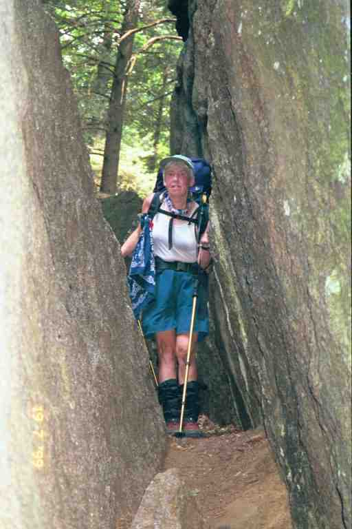
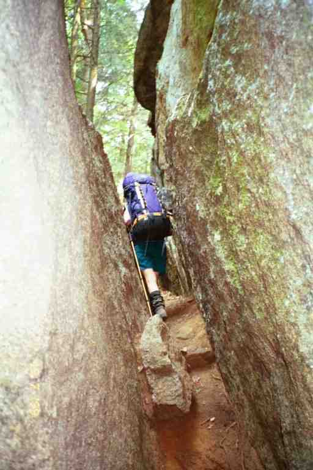
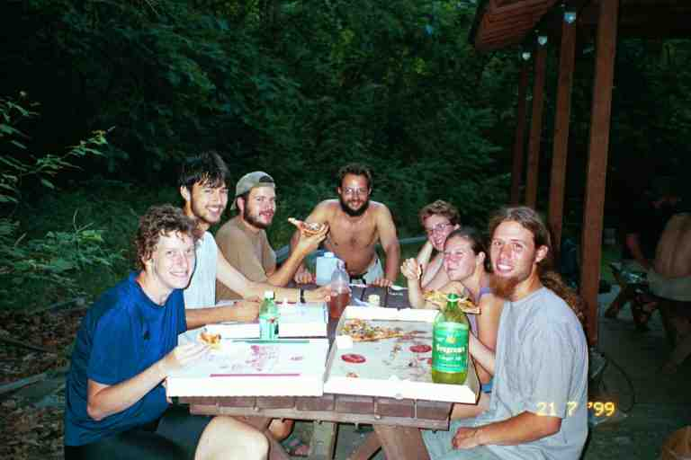
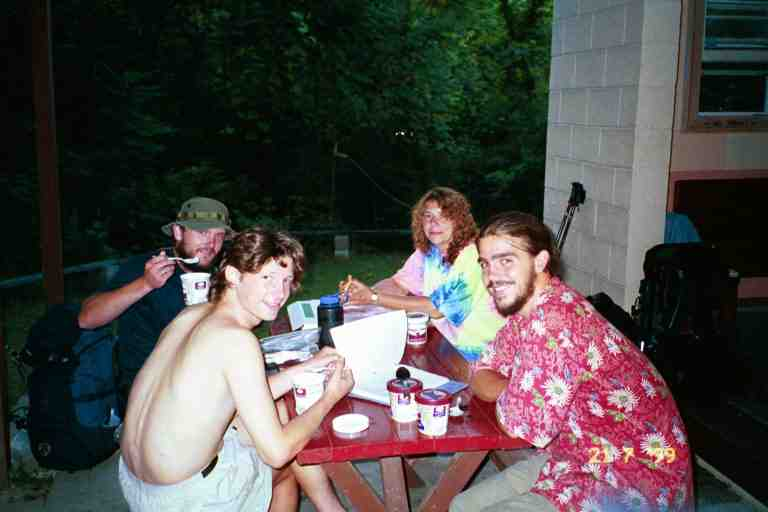
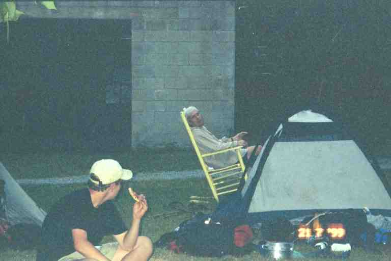

On Monday morning July 19, the driver for Enterprise Car Rental drove us back to the trailhead where we had dropped off PADDLER and SPOTTED BEAR three days earlier. For most of the next two days we would be in Bear Mountain/Harriman State Park which is a wide protected area in comparison to the narrow sliver of protected lands that we had gone through over the last few days. The first section of the Appalachian Trail was completed here in this park in 1923.
The woods were dark as we went up a steep hill. We went under the NY Thruway and back into the woods. The ground was softer underfoot but there were still plenty of rocks and boulders. After two miles we came to the Lemon Squeezer where the trail literally squeezes between two large boulders. MA managed to scrape through with her backpack on but I was a spoilsport and found a way to walk around it. (Another picture) At the 5.5 mile mark we headed 0.3 miles off the trail down the road to Tiorati Lake with its public beach and washrooms. We sat at a picnic table in the covered area in front of the washrooms and purchased some ice cream and pop from vending machines that seemed more willing to keep our money than deliver products.


We met a young woman in a car looking for BLACK BEAR. We said we did not know him. She was SOARING EAGLE, BLACK BEAR's wife. She had got off the trail because of an injury and was now slackpacking BLACK BEAR. The weather looked threatening so we decided to stay a little while and make some phone calls. Things got a little busy when we were joined by a group of hikers that we had not met before. Being off the trail for three days, it was not surprising that we would run into new people, in fact we would be surrounded by many new people over the next few days. The group included BLACK BEAR and a group that called themselves the MULE TRAIN. They were WALKING HOME (who was walking home to Maine), STITCHES (she had required stitches for a cut early in the hike), PA MULE (pronounced P A MULE --from PA and often simply called MULE), TRAIL TROTTER, and WHITTLER. They had been together for a while but would soon be splitting up because TRAIL TROTTER would be getting off the trail to meet her parents. WHITTLER and PA MULE would likely be getting off with her. More information about the MULE TRAIN can be found in STITCHES' great on-line journal (http://friends.backcountry.net/m_factor/index.html). There are many references to us in the journal as we hiked on and off with her over the next month.
A thunderstorm roared through with high winds and heavy rain but was short lived. We felt a little damp and cool so I took out my stove and made soup with a ramen noodle mix, using twice the amount of water. We relaxed sipping the soup. The MULE TRAIN went on without their backpacks as SOARING EAGLE was slackpacking them to a road crossing further along. After a short dip in the lake, we walked back up the road to the trail. We stopped for the night a few miles later at William Brien Memorial Shelter.
This shelter was built up against a big boulder at the base of a little hill and the back wall is therefore rock. There was no water here but we had loaded up at a pump at the park. Two other hikers camped nearby: CAPTAIN who was part of a large group of young people that we would soon be meeting and TIME OUT, a young man from Israel. We could hear artillery fire the entire time we were here, likely coming from West Point or possibly Camp Smith, the National Guard training area.
Early the next morning we came out of the woods to what is likely the most dangerous road crossing, the Palisades Interstate Parkway. We walked to the edge of the first two lanes of the road and to our right saw a road sign indicating 34 miles to New York City. We quickly ran across the busy road and into the wooded median where we came across a lawn chair set up next to the trail. After crossing the other two lanes we headed into the woods and made the steep climb up West mountain. After a short descent, the trail began climbing the winding paved road up Bear Mountain. There was a high sheer rock face looming above us along the right side of the road. After a short distance, the road rose above the cliffs and we went into the woods to continue our climb, crossing the road a few times before coming to the stone tower at the summit of the mountain. We bought pop from a vending machine at the washroom and filled our water bags at a hand pump next to the tower. We met a hiker named WHARF RAT who was looking for a friend called HUMBOLDT.
The trail wound its way down the other side of the mountain, following a road for a short distance and then heading back into the woods. At the base of the mountain, the trail arrived at a busy park around a lake and went right by the Bear Mountain Inn. We were a little confused in this congested area trying to find the route of the trail through the picnic area around the large lake. We met TOO OBTUSE at a picnic table with his girl friend who had come to the trail to meet him. This was his second year on the trail, having successfully completed a thru hike the previous year. We also saw a man who was offering rides to hikers to get supplies. This area has a reputation of being one of the problem areas in getting resupplied but we had enough with us and we were planning at getting a few things at a gas station that we had heard was a few miles beyond. Furthermore, we were planning to have lunch here.
The Inn is a large hotel which includes restaurants, a few shops and a large mostly deserted food court. We bought a couple of small expensive hamburgs and fries and went to a table far away from the few patrons because of our odour. We then followed the trail through the park and descended to a walkway which is the only spot that the trail goes underground (and also the lowest point on the trail at 124 feet). We proceeded through the park's zoo (thru hikers do not have to pay) and then crossed the long Bear Mountain Bridge over the Hudson River.
There was a short road walk and then a steep 700 foot climb up from the road into woods. The heat and humidity was oppressive and we stopped to rest in a small clearing up a short path above the trail. We set our sleeping pads on the ground and lay with our heads on our packs for some time. MA was tired and we thought of staying here for the night. I suggested we continue on as Graymoor Monastery was only 3.5 miles away, and there was the possibility of obtaining a meal and lodging there from the Franciscan friars.
About 3 miles later we came down 500 feet to the corner of US 9 and NY 403, and the CITGO gas station we had heard about. Inside we found a small selection of noodle mixes and other hiker type foods. We bought a couple of Cup of Noodles packages which would make a quick meal if we cooked at the monastery grounds and no dishes to wash. We then sat outside against the building, on the pavement, with pop and chips. BLACK BEAR soon arrived and joined us. A real friendly hiker with a great smile.
Another half mile of trail lead us to the back roads of the monastery which we walked for another half mile through the grounds to a large ball field where there were a large number of hikers. Tents were set up at the far edge near the trees and in the middle of the field. We proceeded to a covered eating pavilion in the corner next to the road. The MULE TRAIN was here as was an old acquaintance BLUEGRASS and his dog DOBRO (Althea). Also here was a group of young people that we would be seeing for sometime to come. The group was comprised of two young girls DIRTY BIRD and HUMMINGBIRD, and a number of young men, HUTCH, CAPTAIN, ZAUGAU (a Chinese greeting), BANDIT, SKINNY, WINGLEY and JIFFY. (It could be that one or two of the group were not present here).
It was past 5 o'clock so it was too late to be accepted for a meal at the Monastery. There was no lodging for hikers this year as the accommodations were being used by an order of nuns whose own residence was being renovated. We had supper, filled our bags at the tap next to the pavilion and then went and set up in the middle of the field. We went to sleep to the sound of the lively chatter of the young people sitting in a circle nearby.
A few hikers got up early and went for breakfast at the monastery but we decided to hit the trail as soon as we were up. At the 3 mile mark the next morning, we came to the Old Albany Post Road. We had a little confusion as to the direction to go and then took the road to the right. As we walked we saw a number of very expensive houses through the trees and even some properties with gates. There were a few old blazes on the trees near the road but we started having doubts about whether we were on the trail. We finally decided to turn around and head back to where we came out of the woods. There we discovered the trail actually went to the left and went immediately back into the woods in the angle of another road joining the Albany Road.
We were soon passed by TIME OUT and HUMMINGBIRD. They had left earlier than us in the morning but they also had gone the wrong way and had gone further than us down the road. They had found blazes far down the road so they continued until a vehicle had stopped to tell them to go back. We were then passed by BLUEGRASS who was wearing a skirt which he said kept him cooler. We found out later that there was nothing under it.
Around lunch time, the trail crossed the Dennytown road where we stopped to eat on the edge of the road with a large group of hikers including some of the MULE TRAIN and the group of young people. We met RHYTHM who was slackpacking in the other direction today. This was our only meeting, but we saw him again in September in Millinocket, after he had finished the trail. We remembered each other then. I obtained water from an electric-powered pump on a small brick building which was either a pump house or an electrical station.
We reached NY 301 at the 12 mile mark in the middle of the afternoon. Our plan had been to go down the road for a mile to Fahnestock State Park where there was camping, showers and a concession stand. SOARING EAGLE was at this road crossing with her car. STITCHES and WALKING HOME had asked if she would slackpack them the 7 miles to RPH shelter and were putting their packs in the car. We did not know SOARING EAGLE very well so were reluctant to ask her to slack us also. We finally decided that we would continue on to RPH shelter, but with our full packs, and we took off after the other two.
For some reason our adrenaline was flowing and we did the 4 miles to the top of Shenandoah Mountain in record time despite the heat, arriving shortly after the other two who did not have their packs. We sat on the exposed rock on top of the mountain relaxing and talking and then hurriedly did the final 4 miles to the shelter. It was an 18.7 mile day.
Surprise, surprise! PADDLER and SPOTTED BEAR are at the shelter. We had taken just 2 days to catch up to them. They had taken two days off at a motel near Bear Mountain because of the heat and the effect it was having on SPOTTED BEAR. There was a large group camped on the lawn in front of the shelter (17 people according to PADDLER's journal - http://paddler99.trailstories.com/journal), nobody seeming interested in setting up in the enclosed shelter. We paid for a pop in a bucket of cold water provided by the caretaker. SOARING EAGLE took orders and money and took STITCHES and DIRTY BIRD with her for a pizza and convenience store run..
I have attached two pictures of some of the group having pizza at the two picnic tables under the covered porch attached to the shelter. The first one from left to right around the table shows STITCHES, ZAUGAU, BANDIT, BLACK BEAR, SOARING EAGLE, DIRTY BIRD and BLUEGRASS (without his skirt). The second shows TIME OUT, HUTCH, WALKING HOME, and CAPTAIN. I found a rocking chair in the garage on the property and brought it out. MA sat and rocked next to our tent as she ate her pizza.



This was the first time PADDLER met STITCHES. They belonged to the same trail mailing list and had exchanged messages on-line before starting. They had started within a day of each other but had never met. PADDLER also spent some time talking to WALKING HOME who was from his home state of Maine.
***************
The September 2000 issue of National Geographic Traveller Magazine has an article on the AT that covers five 1999 hikers, four of whom we knew well. There is a full page devoted to each hiker with a beautiful picture of each one and a moving short narrative of their motivation. Highly recommended inspirational reading.
CAPTAIN is one of them and tells about two of his friends committing suicide and how he came to the trail to gain something true and meaningful that he could carry with him for the rest of his life. He says the journey changed him in ways he cannot describe but that he tries to fix forever in his mind the lines of the mountains rolling out to the horizon. He should have been lonely out there but instead he never felt more loved and connected.
WALKING HOME is also featured. She is a 55 year old lady who says she set out on the trail to grieve. Her son was killed in a car crash in September 1998. The last thing they did together was climb Mount Katahdin. So she carried some of his ashes in a small corked bottle around her neck all the way from Georgia. She left some on the top Katahdin when she got there at the end of September.
T-ROY, who had sewn my backpack together, is included in the article. He is a 29 year old product-design engineer who got burned out. He missed everyone from back home but was goal oriented and finished the trail. He said that the initial excitement on the trail fades and it becomes a new way to live. He says he untied a lot of knots and learned to relax. He has a different perspective on time, looking at the sun to decide when it's lunch time. He also came to realize how little it takes to make him happy.
EVERY HIKER'S DREAM is a 61 year old hiker that we would meet in a few days and who we knew more by his real name Dick Christian. He says that he is not an overly religious person but he spent many days walking and just thanking God for the scenery and the magnitude of his creation.
****************
We were tired from our long hot day and decided to sleep-in the next day. Most of the hikers were gone when we got up. WALKING HOME and STITCHES were still here waiting for BLACK BEAR and SOARING EAGLE to get up in the hope of slackpacking again. We left before PADDLER and SPOTTED BEAR, heading a short distance up the road and then crossing the Taconic State Parkway at a dangerous construction site. This section of the Parkway would be changing from a two lane to a four lane highway in a couple of days and the trail authorities would only now be sending someone to figure out how and where the trail would get across this busy road.
The trail in this region is a narrow protected area on the top of mountains and we are never too far from civilization. Late in the morning we heard the loud sounds of traffic at a traffic interchange on the Parkway far below. Just after noon we arrived at NY 52 and walked 0.4 miles down a hill to the Mountain Top Deli Market. We each ordered a sub trying to master the art of sub ordering in NY, which involves knowing which combination of meats, which additional items to add, which condiments and also which kind of buns. I think wedgies is the name of the sub buns we are used to, but when we got to Massachusetts they were called grinders.
We ate with PADDLER and SPOTTED BEAR on the picnic tables outside and watched as the locals came and went picking up groceries, deli subs and items from the hot trays behind the counter. We were soon joined by another hiker (possibly RHYTHM). We went back for large containers of ice cream and later replenished our food supplies. After about an hour and half of hanging out eating, I asked if I could use their toilet and was informed it was only for staff, but that they did have a water faucet for hikers to use at the back of the building. I felt like telling them that I was interested in emptying not filling up. However I did not say a word as I did not want to jeopardize this vital water source for other hikers. The others went to use the toilet at the attached pizza place next door, which was embarrassing since none of us had purchased food there.
We went a further 4 miles to Morgan Stewart shelter. We stopped because of the heat and fatigue. We also felt there would be no point in going 7 miles to the next shelter and arrive late and tired. We first met GENTLEMAN JIM here, making a call on his cell phone. I think this is the only thru hiker we met with a phone. He did not stay as he was heading on to Telephone Pioneers shelter. Because this is a dry section of trail, a pump was available. We filled a bucket provided and filtered from it into our bags.
In the shelter's register, we found a page long dissertation from ABNER SERD (based on the word absurd) who comically explains his problems with ordering a sub in NY. He describes how he and the clerk stared at each other in silence for a long time after he placed his order. He finally realized, the clerk was waiting for the list of items to be added. When ABNER SERD said he wanted everything, he got a chuckle because there were likely hundreds of items. It is a shame that such an excellent work of prose only gets seen by the few hikers who stop at the shelter. He had many humorous items in the registers but we never had the pleasure of meeting him. We have heard that he has a program on some NPR radio stations. (See UPDATE at end of chapter)
I believe this is also the shelter that the register had a note from SKIRTS saying that she and TWO TONE ALBATROSS were back on the trail after skipping a long section. We had last seen them sawing a large tree lying across the trail near Kincora hostel in TN on April 27. We never met them and saw no other entries from them.
Over the last few days, PADDLER had found messages in the shelter registers from MERRY HIKER, telling him to call when he got to Pawling NY and he would bring him to his home. PADDLER explained that he and PILGRIM had hiked in the south with MERRY HIKER who eventually got off the trail. When PADDLER told us more about him, we realized that it was Bill whom we had met with his young friend Matt at Groundhog Creek shelter after Mountain Momma's in early April.
The next day we hiked the 8 miles to the road to Pawling. On the way we went through a beautiful area on the relocated trail around Nuclear Lake. The lake was once contaminated but is now apparently safe. PADDLER tells of stopping and watching fish coming right up to shore to nibble at the edge of the water. Unfortunately we missed that, likely because we were worried about the gunfire we could hear on the other side of the lake as we were contouring it. It was apparently coming from a shooting range.
We arrived at County Road 20 right across the street from the Dover Oak, the largest one on the trail with a girth of 19.5 feet. I was glancing down the road looking for the local house which had a hose outside for hikers when I noticed a car coming. We put out our thumbs and were picked up by a lady driving a 1962 Falcon. It looked in near mint condition. I sat on the vinyl seat in back with our bags and MA sat up front. She was surprised that I knew the year of her car (so was I) and told us it still had the original engine. She drove us the 3 miles to Pawling but said she would not have picked us up if MA had not been with me. When PADDLER got to this spot, he crossed the road to the tree and was therefore on the wrong side when a car came by. He stuck out his thumb anyway and they were picked up by a laughing driver. So we both got rides with the first car to go by.
We were let off in front of a deli (with a washroom YIPPEE). We bought hamburgs and fries and went to sit under some trees next to an old train station now used as some kind of tourism office. PADDLER and SPOTTED BEAR showed up, got food and joined us on the bench. It was unbearably hot as we sat there relaxing, making trips to the deli for pop and also trying to locate a place to buy supplies. We met CHRISTIAN, our first southbounder, and the only African American thru hiker we would encounter. He asked if we would watch his pack while he ran a few errands. PADDLER made a few calls to Bill's place and left messages.
After a few hours, CHRISTIAN had not returned for his pack and there was no success in reaching Bill. MA and I decided to go the park 1 mile beyond the town center where the town let hikers camp. PADDLER would stay in town awhile longer and would come and join us later. We walked a few blocks out of the downtown, stuck out our thumbs and got a ride in the back of a truck, the first vehicle to go by.
Edward R Murrow Park was a large municipal park with a lake in the middle. We went and sat on the grass under the trees close to the beach, surrounded by families with young children. Part way around the lake was a concession stand and a roped off area with docks and swimming lanes where children were taking swimming lessons. I bought us a couple of ice cream treats and then went swimming fully clothed. I took a walk around the park to find the camping area. It was in a large field above the lake and there was even a pavilion with picnic tables.
We had no problems in New York and New Jersey although some hikers tell of being treated as hobos. We could say that we were generally invisible and that often people were unaware that the trail went close to their town. I found Pawling to be a refreshing difference. I was a little surprised that they would let strangers spend the night in their popular town park. JILEBI tells of being accepted in someone's home in this area.
We were approached by a lady who came over and asked if we were MA and PA. She introduced herself as Mary Penny, Bill's wife, and said that they had received PADDLER's message. MA and Mary drove to pick up PADDLER and SPOTTED BEAR whom they found walking to the park. We all crowded into Mary's car and PADDLER told us that CHRISTIAN had never shown up for his pack and that he had brought the situation to the attention of a policeman. We never did find out what happened but CHRISTIAN is listed in the hiker directory at http://www.trailjournals.com which shows he got off the trail a week later.
It was a long drive to their place in Poughkeepsie NY. We left our smelly backpacks in the garage and all had showers. It soon became apparent that our timing was bad. Their youngest son was bringing his girlfriend home to meet his parents. Mary threw together another dish in order to feed everyone, and Bill arrived with some bakery items. The son seemed in shock having these four dishevelled strangers sharing the family meal on this important occasion but his girlfriend seemed to enjoy it. The meal and dessert were excellent and the beer was really appreciated. MA and I slept on the sofabed in the family room and the other two slept on the floor.
The next two days were a weekend so Bill and Mary would slackpack us both days. The tops of our backpacks convert to fanny packs and we would use them to carry our supplies for the day. We had limited space in the bags and we did not want to carry too much weight but because of the heat and humidity we had to carry two litres each of water and I brought the water filter. We also brought our food for the day as well as hygiene and first aid items.
It was about a half hour drive to the trail the first day. We met a hiker named RICK ROCK at the road. At the 2.5 mile mark we came to the Appalachian Trail Station where we met RICK ROCK's hiking buddy DICK CHRISTIAN (this is his real name as nobody used his trail name- EVERY HIKER'S DREAM). The Station is a small wooden platform with a bench and is an actual stop for a New York City commuter train.
The hike today took us through many open fields which made things unbearable in this heat. One good thing though was the fact that the rocks had disappeared and the trail was a lot softer underfoot. That afternoon we crossed into Connecticut, our tenth state, and then went over Ten Mile Hill, coming down where the shallow rocky Ten Mile River pours into the Housatonic. We stopped to soak our feet next to a foot bridge over the Ten Mile River and met GALAHAD a hiker who had started the trail with his wife LITTLE FEET (she had to abandon because of injury). He and PADDLER shared a passion for building canoes and they had a short discussion.
A few miles later we came to a road and walked to Bull's Bridge parking area where Bill and Mary were waiting for us with pop and beer in coolers in the trunks of their cars. It had been a 13.9 mile day. That night we treated Bill and Mary and their eldest son Jeff to a restaurant meal.
The next day we were again slacking and were driven 45 minutes to the trail head. The plan was to do 18.2 miles and be picked up near Cornwall Bridge. The day started with a 1000 foot ascent of Schaghticoke Mountain which took us back into NY for a few miles, and then some mostly gradual ups and downs along a ridge line with views of the Housatonic river. Even though we were not carrying our packs, the walking was difficult with high humidity and temperatures reaching a record 97 degrees. It was tiring and we felt sluggish all day. My feet were feeling a lot better with my new boots, but they were hot and sweaty.
At the 12 mile mark we finally came down out of the hills and walked 5 miles of flat level trail along the river bank. In this area, the Housatonic is a wide, shallow, slow moving, rocky river. We could make good time on this level trail but it was mostly exposed and very hot. We came upon a few spots where we could have stopped to swim but it was a long day and we had to get to our meeting point for 6 p.m. We caught up with PADDLER and SPOTTED BEAR late in the afternoon in a little wooded area along the river at the side trail to the Stony Brook group campsite. We were all tired and still had 4 miles to go including a climb up Silver Hill. As we were all low on water, I went and filtered from a brook.
The trail went along River road for a short distance as it left the river and started climbing Silver Hill. It then went off the road into the woods to finish the climb. TOO OBTUSE went passed us carrying his full pack on the way to Silver Hill campsite. We finally came to our pick up spot and were picked up by Bill and Mary around 6:30. They drove us to Kent CT, where we had $3. ice cream cones at a yuppy Connecticut dairy bar. Supper that night was a BBQ of hot dogs, hamburgs and fresh local corn at Bill and Mary's place. The next day we would be back on the trail with our full packs.
***********************
I mentioned a journal entry from Abner Serd about ordering a sub in a New York deli. We met Jilebi and Rhubarb during our California trip in 2000 and they informed us that YOGI had copied the entry. Fortunately YOGI has a journal on line at trailplace.com under the name Jackie McDonnell and we found the entry: (http://trailplace.com/c99journals/308mcdonnell/308mcdonnell_index.html).
7-11. All right: Somebody explain to me how a New York deli works, because it's obvious that I just don't get it. You walk in, the guy behind the counter says "can I help you?" and you say "yeah, can I get a turkey sandwich, please?" And the guy says "sure." And then he stares at you. And you stare at him. And he says "you want anything else on that?" NO, just a 12-pound turkey & two slices of bread. Don't forget to pluck it. But you don't say that. Instead you say "yeah, whatever it comes with." And he looks kind of cross-wise at you. And you say "lettuce ... tomatoes ..." And he says "mustard & mayo? cheese? what kind of cheese? American? white or yellow? you want salt & pepper on that?" And you think, cheeses, just make me a muggerthumpin' sandwich! You DO know how to make a sandwich, don't you? You ARE a professional sandwich-maker, are you not? What do you want, a floggin' recipe? By the way, it was a very good turkey sandwich, I just wanna know how to order it again without rattling off a list of ingredients. How do you say "make me a sandwich with everything" in New York deli language? There's got to be a way. I remember down south somewhere, maybe Mountain Mama's, I ordered a cheeseburger. The girl behind the counter said "you want it dressed?" No, just put a bathrobe on it. We ain't expecting company. ----AbnerSerd
**********************************************